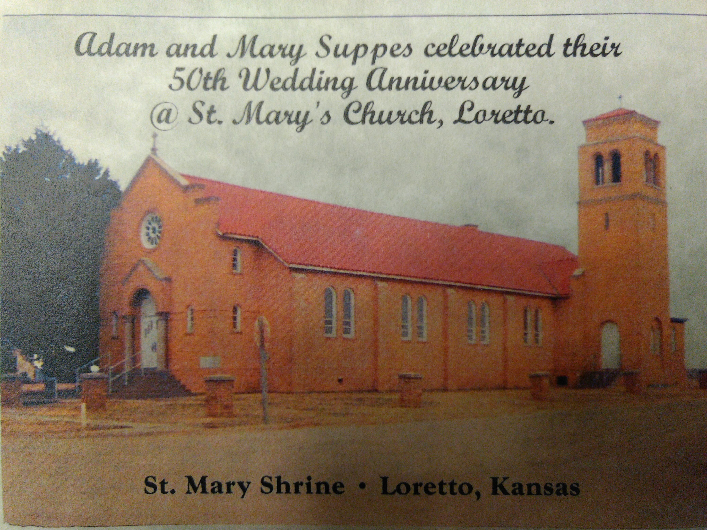
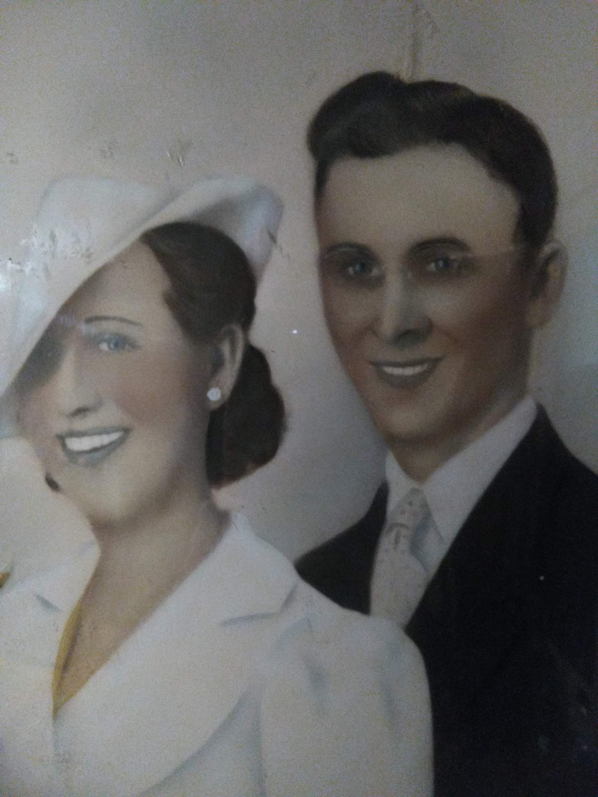
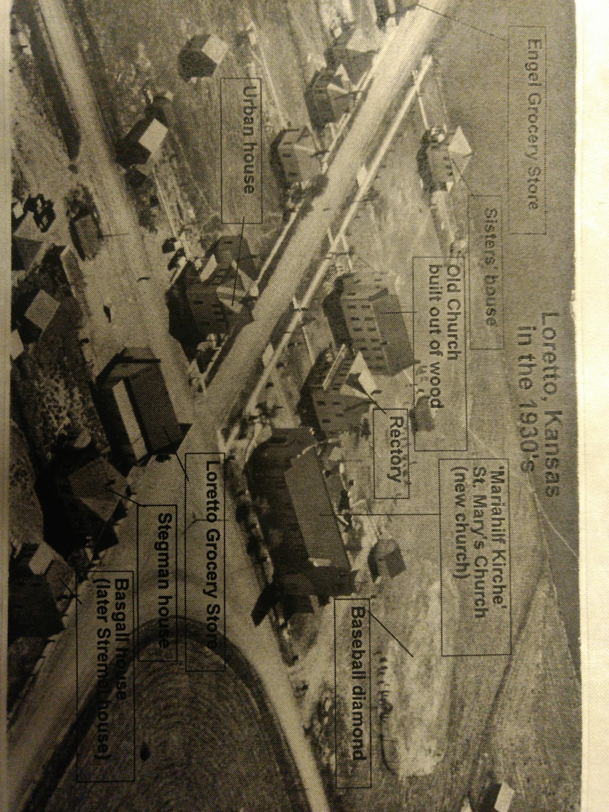

Picture 5:

This picture, that was taken around 1875 in Marienthal, Russia, shows the Volga Germans, many of which are my ancestors.

This is a picture of the church in Loretta, Kansas where my great grandparents, Tony and Agnes lived. They helped with the funds to keep this church alive and well.

This is a picture of my grandma and grandpa Dreiling. (Robert and Anna Dreiling)

This is a picture that maps out the small town of Loretta, KS, where the Suppes side of my family comes from.
This is a picture of a few men, all with mustaches and hats on, taking a picture. One of the men is John Schaffer, who is a relative of mine.
This picture, that was taken around 1875 in Marienthal, Russia, shows the Volga Germans, many of which are my ancestors.